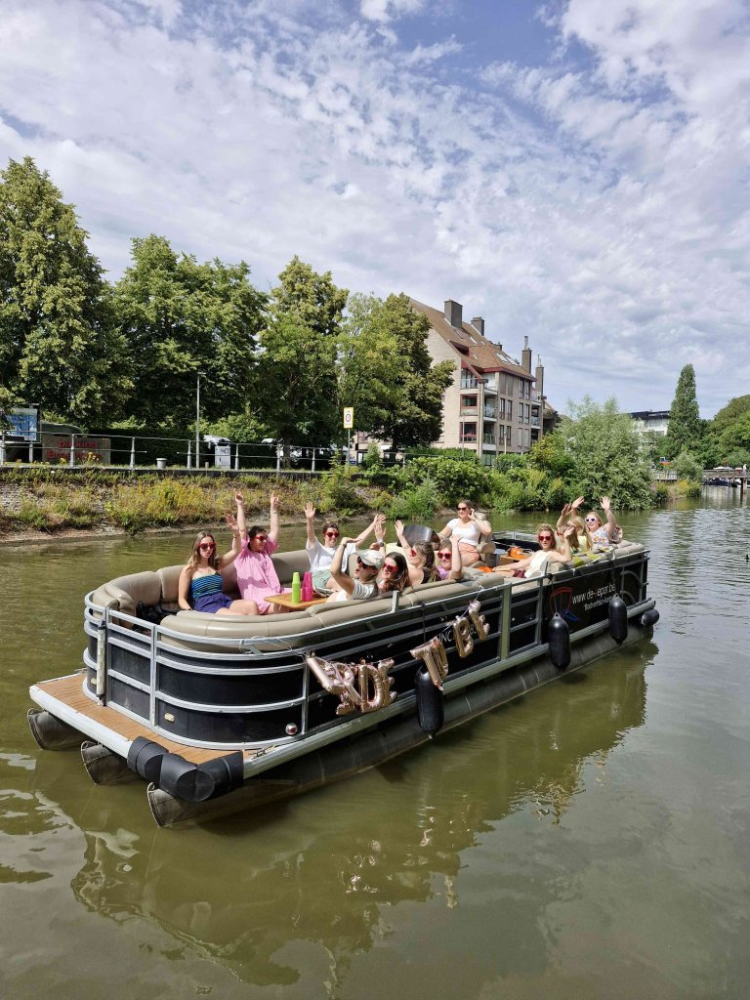
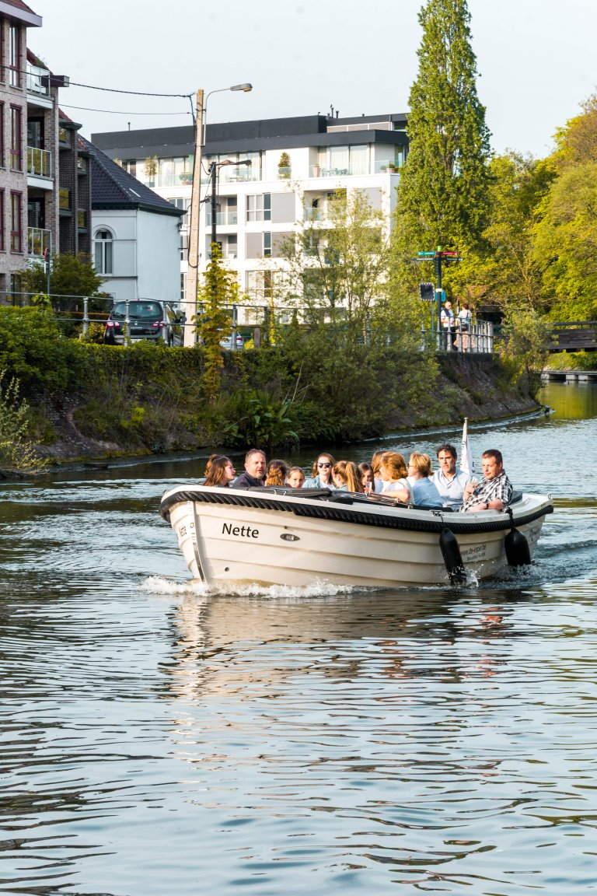
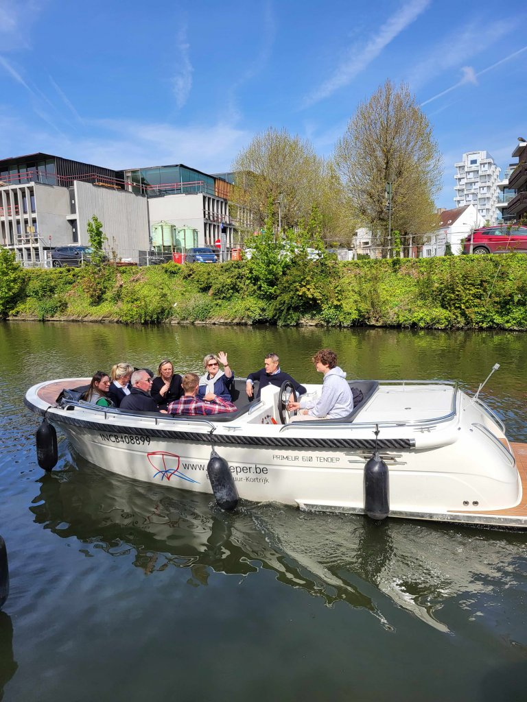
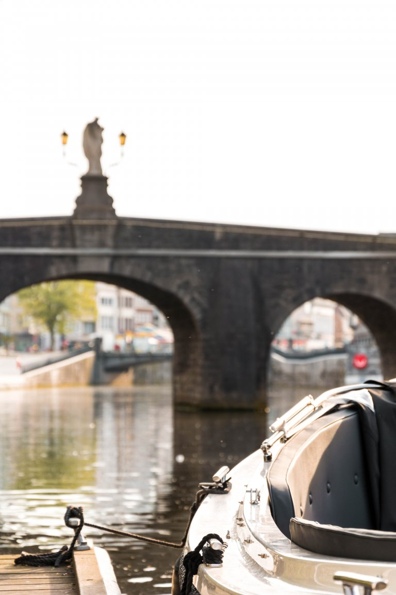

Uitgelicht
Liese
Een ruime pontonboot voor 12 personen, met comfort, koelkast en echte kapiteinssfeer.
vanaf €190Kortrijk · Broeltorens · Leiestreek
Seizoen 2026
10 april — 18 oktober
Vanaf het water voelt de stad trager, warmer en memorabeler. Stap op aan de Broeltorens en ontdek de Leie met vrienden, familie of collega’s.
Bootverhuur in hartje Kortrijk
Deze preview behoudt de herkenbare sfeer van De Keper: lokale warmte, echte boten, duidelijke prijzen en een visuele eerste indruk die sneller vertrouwen geeft.

Uitgelicht
Een ruime pontonboot voor 12 personen, met comfort, koelkast en echte kapiteinssfeer.
vanaf €190 Kalle12 personen · vanaf €180
Kalle12 personen · vanaf €180
Nette10 personen · vanaf €160
Julia8 personen · vanaf €150 Manten6 personen · vanaf €130
Manten6 personen · vanaf €130
De route
Alle boten vertrekken en komen terug aan het Guido Gezellepad. Vaar richting Harelbeke of Menen, kies een korte tocht of neem de tijd voor het volledige traject.
Contact